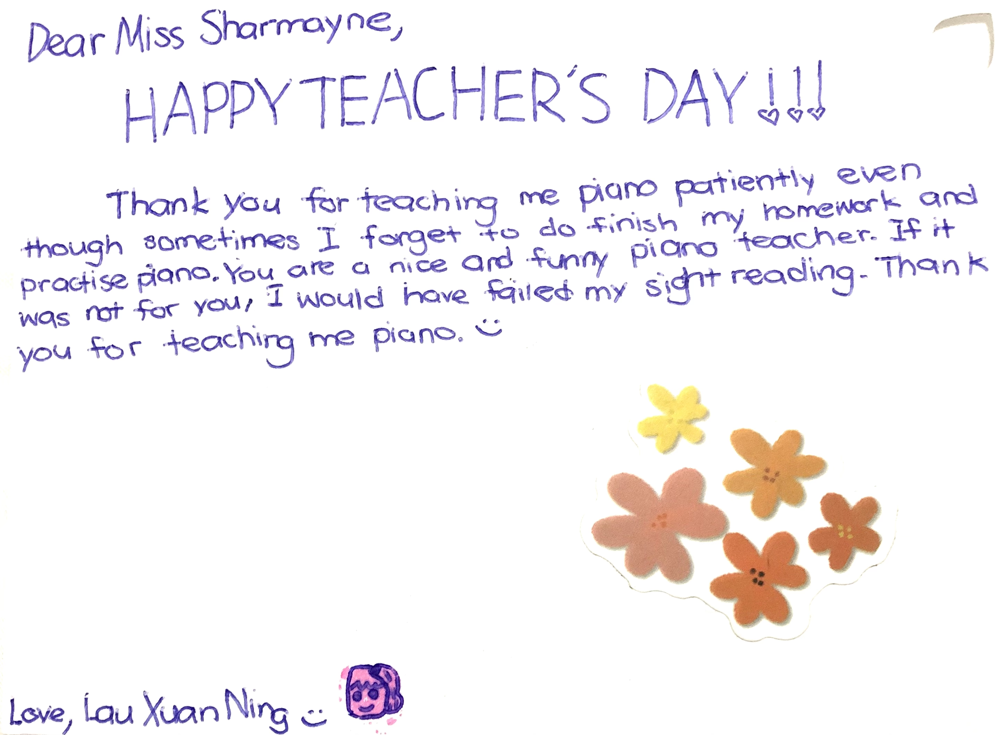
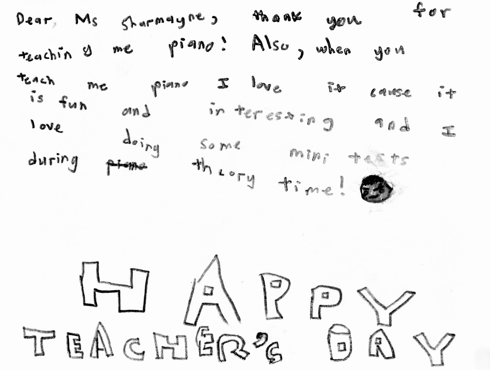

How I value-add
Research
Data Collection Data Visualisation User Testing & Interviews Quantitative Analysis (e.g., ANOVA, regression, etc. using R/Excel) Qualitative Analysis (e.g., Grounded Theory Coding, Thematic Analysis)Coding
Python HTML CSS JS (i.e., D3.js, Three.js) R C++ C#Design
2D Design, Layout
Figma Photoshop Illustrator Lightroom InDesign3D Modelling, Parametric Design
Rhinoceros Grasshopper AutoCAD ArchiCAD Sketchup Fusion360 Revit BlenderRendering, Visualisation
Unreal Engine Premiere Pro Lumion EnscapeHow others see me
In the same spirit, I encourage you to pay this forward, and consider how you can contribute to our community. I am heartened to learn that some of you have already been using the skills and knowledge you have gained at SUTD to do so. Sharmayne, Levona, Rachel and Valent are graduating today with a Bachelor of Science in Architecture and Sustainable Design. They were part of a team who enhanced the community spirit at a void deck in Bukit Panjang by creating a pop-up library. The library aims to give underprivileged families more reading options by encouraging residents to recycle used books, and was fashioned from upcycled old MRT seats, railings and handles. This project exemplifies how innovative design towards a circular economy can contribute meaningfully to the community both now and in the longer run. I am certain that many here will use the knowledge and skills that you have gained at SUTD to make a positive impact in the lives of others.Gan Siow Huang, Singapore Minister of State @ SUTD's Commencement Ceremony 2022
Heylo! Really wanted to say thanks for pushing yourself this hard during internship. Your tenacity and perseverance is truly inspiring, and even sometimes I question myself if I'm working as hard as you 😂 From delivering such a rigorous first 30 days project, to staying up till 2++am for the hackathon, to juggling between part-time internship and school... it's been a really amazing time being able to mentor & work alongside you. I hope you've found your time in Grab to be insightful and really hope you are also recognising the amazing achievements you made over these short months!! I definitely would be rooting for you for all that you'll be doing in the future 🙌
Andrew Chen, Mentor & Lead Product Designer @ Grab
Sharmayne is a quick learner and was able to quickly pick up new skills like AutoCAD and Photoshop. She is always willing to learn and take more responsibility in the tasks given to her. She is willing to listen and is open to suggestions, but at the same time she is not afraid to offer her own ideas on how to solve the problems that arise from the tasks given to her.
Vanessa Baey, Supervisor & Project Manager @ Kyoob Architects
Sharmayne is independent, proactive and has a lot of zest. She will get things done and co-relate the work from one section to another and rectify any mismatch spontaneously. She is mature and needs minimum supervision.
Tan Li Kiang, Supervisor & Corporate Services Manager @ Schroders
Sharmayne is composed and calm in the face of pressure. She exhibited a caring attitude towards the elderly and has a wide range of relevant knowledge to our program (music and cooking). She also asked the best and most pointed questions to clarify knowledge.
Joseph Cheah, Supervisor & Centre Manager of Montessori for Dementia Care


Xuan Ning & Yu Jie, my piano students
How I destress & recharge
Books I always go back to
The Last Lecture by Randy Pausch The Power of Habit by Charles Duhigg Atomic Habits by James Clear The Subtle Art of Not Giving a F*ck by Mark Manson So Good They Can't Ignore You by Cal Newport The Design of Everyday Things by Don Norman 21 Lessons for the 21st Century by Yuval Noah Harari